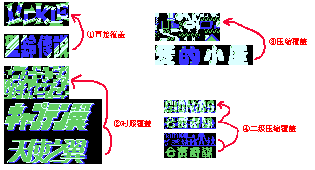
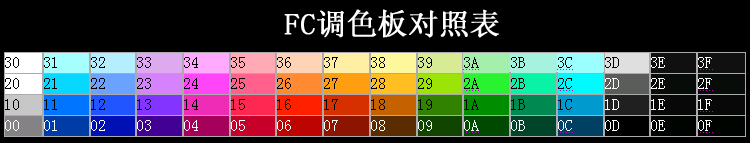

FC游戏标题汉化教程 —— sosovipp（MS汉化组）
http://bbs.emumax.com/viewthread.php?tid=23746&extra=page%3D1
http://fcpic.nesbbs.com/0zt/ms/Info.asp

ＦＣ标题汉化目前已知的有四种情况，分别对应下边第8步的①②③④，难度由低到高。
用到的软件有：Vnes模拟器、TLP、Photoshop、FCdebug、十六进制编辑器(CrystalTools、UltraEdit32等)。
建议先熟练掌握Photoshop，并培养一定的设计思想跟艺术品味。因为汉化LOGO并不只是技术问题。
大概步骤：
01、用VNES运行游戏，截下标题画面(会自动保存到模拟器目录下或者ROM的目录下)。
02、用TLP打开ROM，对照刚才的截图，找出标题LOGO的相应区域(按键盘上的方向键可进行调整)。
点鼠标右键，拖拉选取，然后编辑->导出位图，保存。
03、运行Photoshop，打开导出图，图像->模式->RGB，按 shift+d 还原默认前景色跟背景色。
04、图像->画布大小->定位选左上角，宽度、高度 300％，确定。
05、编辑->(最下边)预置->参考线、网格和切片，把网格间隔改为8象素，子网格为1。视图->显示->网格，视图->对齐到->网格。
06、打开截下的标题图，ctrl+a 全选，然后选择左边工具栏横数第二个的实选取工具，拉到导出图那里。
07、选左边工具栏的“T”，输入要汉化的字，并选择合适的字体、处理成符合原风格的效果。
(字体颜色、描边颜色等要跟导出图的一致。字体下载见附录1)
08、以下是标题汉化的核心部分，分三种情况：
①直接覆盖(简单)：原标题完整、无错乱，直接把汉化字覆盖上去就行了；
②对照覆盖(普通)：原标题完整、但错乱，对比原标题的位置，把汉化后的字一小块一小块的放到相应的位置覆盖；
(也可以直接把整块文字覆盖上去，然后再到程序那边调整)
③压缩覆盖：(原标题是组合形式的)
这种最麻烦，图库一般都很小，所以得尽可能的把汉化后的字简化压缩以节省空间。
确保空间足够后，按照大概位置放回去，再由程序方面调整地址。(见第11步)
(注：以上三步注意不要覆盖到其他无关区域)
④二级压缩覆盖：(原标题是重叠压缩的)
TLP里边，蓝：第一层；绿：第二层；白：第一层与第二层的交叉(同时属于一、二层)。
PS里边，将这两层分离为独立的两个图层。然后将汉化的LOGO分布放到这两个图层，叠加，交叉部分用白色表示。
做好后导入覆盖，检查、调整地址。
09、完整覆盖原导出图后，图像->模式->索引，然后保存为BMP，颜色表选自定义，载入附录2的TLP颜色表。
10、TLP导入汉化后的BMP图，放到原来的位置覆盖(如果导入出错，把位图切成几块分几次导入)；
点击鼠标左键确定，保存。运行Vnes载入处理后的ROM，检查，如果有错，返回以上几步重新调整。
11、标题的调整：运行FCdebug，打开ROM，标题画面时，打开 VRAM，从下方查出相应的图块的地址。
然后打开十六进制编辑器，Ctrl+F查找，找到相应的地址进行调整修改。
汉化LOGO的一般原则是：
● 按照原风格、原配色及原字体效果进行设计；（因为原来的LOGO大都是专业的游戏美工精心设计出来的，配色方面也很讲究）
● 符合最基本的视觉效果；
● 如果时间充裕的话，可以把LOGO设计得更活泼、有个性一些。（因为即使汉化一个简单的LOGO，至少也得花一两个小时）
附录1
字体站点集合
附录2
TLP颜色表
附录3
FC调色板

附录4
字体速查表